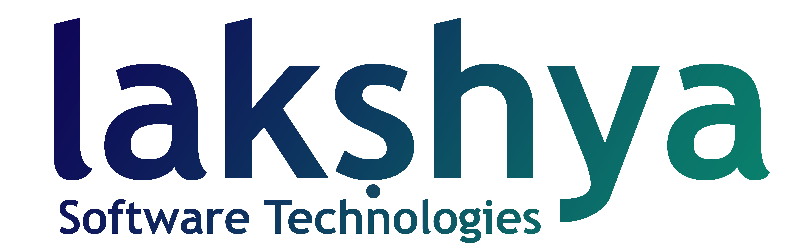

<header id="qodef-page-header" role="banner">
    <div id="qodef-page-header-inner" class="">
        <a class="navbar-brand" href="#"></a>
        <nav class="qodef-header-navigation" role="navigation" aria-label="Top Menu">
            <ul class="menu">
                <li class=" current-menu-ancestor current-menu-parent  qodef--hide-link qodef-menu-item--narrow">
                    <a routerLink=""><span class="qodef-menu-item-text">Home</span></a>

                </li>
                <li class="qodef--hide-link qodef-menu-item--narrow">
                    <a routerLink="AboutUs"><span class="qodef-menu-item-text">About Us</span></a>

                </li>
                <li class="qodef--hide-link qodef-menu-item--wide">
                    <a routerLink="ContactUs"><span
                            class="qodef-menu-item-text">Contact Us</span></a>

                </li>
                <li class="qodef--hide-link qodef-menu-item--narrow">
                    <a routerLink="Services"><span class="qodef-menu-item-text">Services</span></a>

                </li>
               

            
                <li class="qodef--hide-link qodef-menu-item--narrow">
                    <a routerLink="Blog"><span class="qodef-menu-item-text">Blog</span></a>

                </li>
            </ul>
        </nav>
        <div class="qodef-widget-holder qodef--one">
            <div id="deon_core_side_area_opener-2"
                class="widget widget_deon_core_side_area_opener qodef-header-widget-area-one"
                data-area="header-widget-one"><a href="javascript:void(0)"
                    class="qodef-opener-icon qodef-m qodef-source--svg-path qodef-side-area-opener"
                    style="margin: 0 0px 0 34px">
                    <span class="qodef-m-icon qodef--open" data-bs-toggle="offcanvas" data-bs-target="#rightOffcanvas"
                        aria-controls="rightOffcanvas">
                        <svg class="qodef-open-lines" xmlns="http://www.w3.org/2000/svg"
                            xmlns:xlink="http://www.w3.org/1999/xlink" x="0px" y="0px" viewBox="0 0 41 11"
                            style="enable-background:new 0 0 41 11;" xml:space="preserve">
                            <line x1="1" y1="1" x2="40" y2="1"></line>
                            <line x1="16" y1="6" x2="40" y2="6"></line>
                        </svg> </span>
                </a>
            </div>
        </div>
    </div>
</header>

<div class="offcanvas offcanvas-end" tabindex="-1" id="rightOffcanvas" aria-labelledby="rightOffcanvasLabel">
     <div id="qodef-page-wrapper">
        <div id="block-26" class="widget widget_block" data-area="side-area">
            <div class="wp-block-group">
                <div class="wp-block-group__inner-container is-layout-flow wp-block-group-is-layout-flow">
                    <div class="qodef-shortcode qodef-m  qodef-section-title qodef-alignment--left  ">
                        <h4 class="qodef-m-title">
                            Incredible<br> and modern<br> design </h4>
                        <div class="qodef-m-section-text" style="margin-top: 15px">Contemporary theme especially
                            made for technology &amp; software developing company websites. Deon, a new age of
                            WP design.</div><p class="qodef-contact-info-widget qodef--email"> <a itemprop="email" href="mailto:deon@qodeinteractive.com">deqodeinteractive.com</a> </p>
                    </div>


                </div>
         
            </div>
        </div>
     
    </div>
</div>